AOL
com.aol.mobile.aolapp · captured 2026-09-25T19:10:01 · run ex0925-150140 · account logged-in
Regime: no-scarcity · synthesized by llm · 8 verified / 0 inferred claims · HTML screens 4/17
Brief
- One-liner
- AOL mobile app for browsing curated news feeds, reading articles, viewing comments, and managing personal account feeds.
- Audience
- General news readers and AOL account holders looking for categorized news, entertainment, and local updates.
- Core loop
- Browse news headlines and categories on the home feed → Tap an article to view details and full content → Read or interact with article comments and discussions → Save or share articles of interest
- Makes money
- Monetizes primarily through native and display advertisements (such as Taboola advertising units) embedded within news feeds and article pages.
- Scarce
- User attention
Account sign-in / verified user status - Ads today
- Banner and native sponsored recommendations (Taboola) appear frequently throughout the news feed and article view pages.
- Open questions
- Are there paid subscription tiers for ad-free news reading hidden behind account sign-in walls?
What additional features unlock upon signing into an AOL account?
Screens (17)
{kind=link}
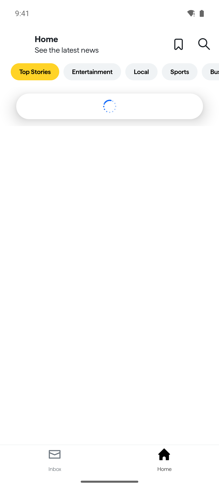
This screen displays the latest news and top stories categorized by topics.
5 visits · 38 elements{kind=link}
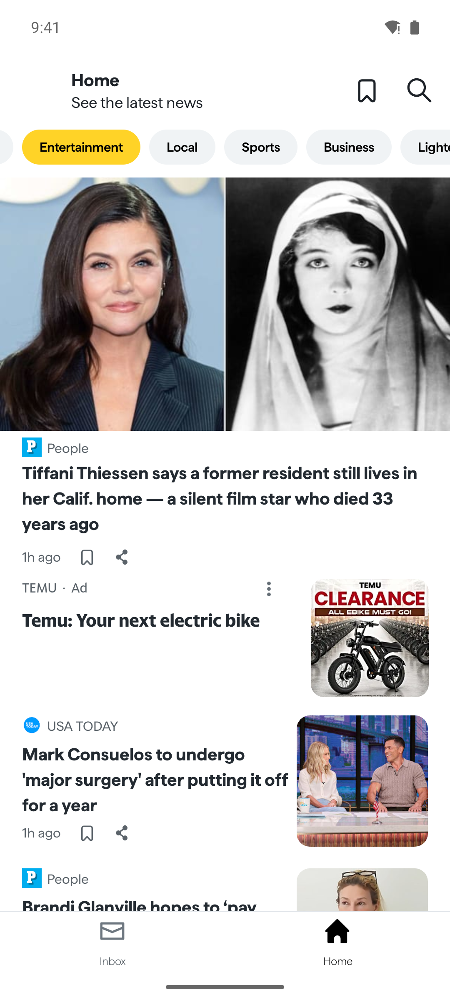
Provides the latest news articles and updates across various categories with integrated advertisements.
4 visits · 76 elements · 1 variant(s) · signals: ad, price, ad
Displays a news article with images, text, and engagement options.
10 visits · 56 elements · signals: ad, timer, ad{kind=link}
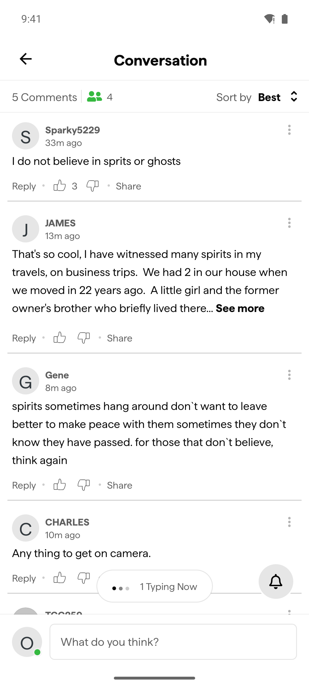
Displays comments and conversation threads for an article.
2 visits · 143 elements
Allow users to type a comment on an article before signing up or posting.
4 visits · 25 elements
The user must sign in to access their AOL account.
1 visits · 18 elements{kind=link}
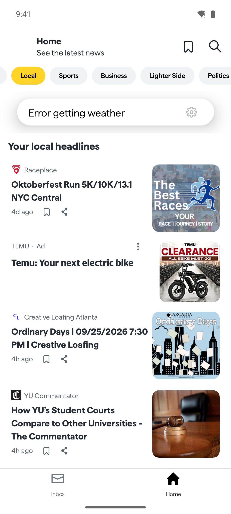
Displays top local headlines and news articles with integrated advertisements.
1 visits · 89 elements · signals: ad, timer, ad{kind=link}
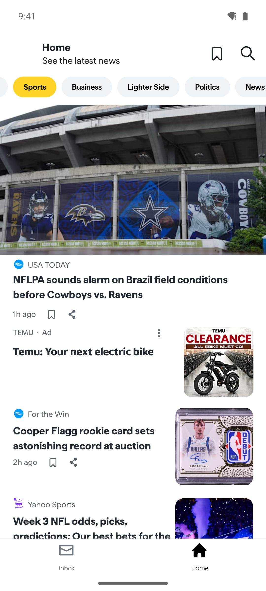
Provides latest news articles and updates across various categories.
12 visits · 79 elements · signals: ad, ad
Displays a list of saved articles with an empty state.
5 visits · 22 elements{kind=link}
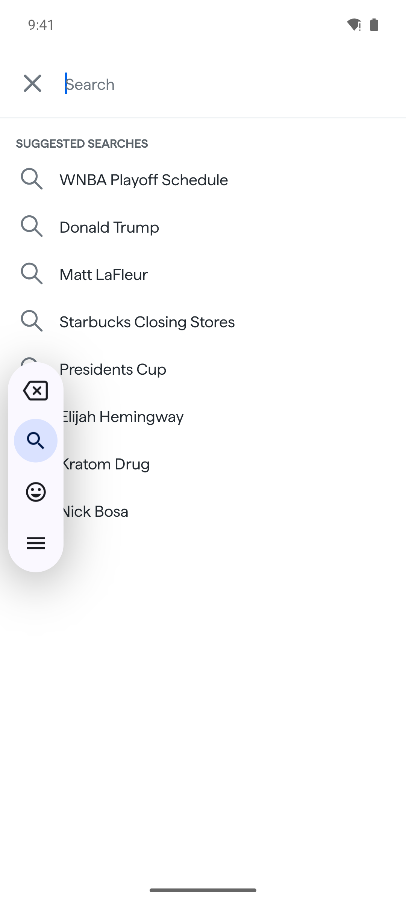
Provides search suggestions as the user types a query.
4 visits · 45 elements
Provides account management, settings, and support options from a side menu.
3 visits · 109 elements · over s08 · signals: ad, upsell, ad, ad{kind=link}
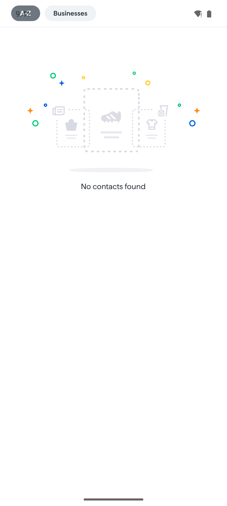
Displays empty contact list state.
3 visits · 10 elements{kind=link}
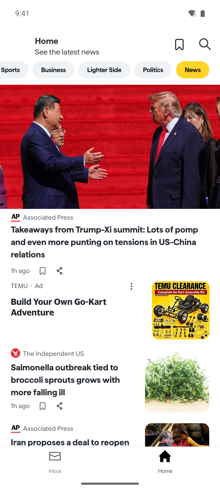
Display latest news articles and updates categorized by topics.
8 visits · 78 elements · 3 variant(s) · signals: ad, ad
Displays top news stories, weather, and articles for the user.
3 visits · 89 elements · signals: ad, ad{kind=link}
Displays news articles with embedded advertisements.
2 visits · 33 elements · signals: ad, ad, ad
Displaying a news article page with an ad and engagement options.
3 visits · 40 elements · signals: ad, ad{kind=link}
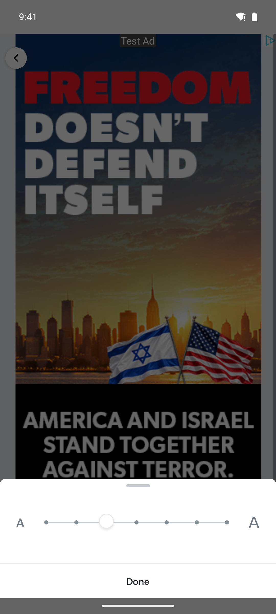
Adjust font size for reading articles.
2 visits · 13 elements · over s16 · signals: adEconomy
Rows highlighted in yellow are inferred: a quote or number could not be found on screen or in a measured effect.
Ads today (observed, never tapped)
| format | screen | element | conf | evidence |
|---|---|---|---|---|
| native | Home News Feed | e42 | observed | |
| native | Article Details | e15 | observed | o0061/e15 “Ad” ✓ |
| native | Home News Feed | e47 | observed | |
| native | Home News Feed | e42 | observed | |
| native | News Feed Home | e41 | observed | |
| native | Home Feed | e37 | observed | o0045/e37 “Ad” ✓ |
| banner | Article Detail Page | e22 | observed | |
| banner | Article Ad View | e17 | observed | o0073/e17 “ADVERTISEMENT” ✓ |
Derived numbers (computed in code)
- cheapest paid pack: none observed
- No priced packs observed: unit prices, action costs and exchange rate are unavailable.
- No daily free source observed.
Moments
Moments
| id | type | screen | reach | description |
|---|---|---|---|---|
| m1 | desire | Home News Feed | core-loop | Home News Feed shows a price: "Brandi Glanville hopes to ‘pay everyone back’ after GoFundMe raises $22K for her facial disfigurement" |
| m2 | desire | Account Menu Sidebar | occasional | Account Menu Sidebar shows an upsell: "Unsubscribe" |
| m3 | hub | Home News Feed | core-loop | Home News Feed (tab) is a place users return to (5 visits during exploration) |
| m4 | hub | Home News Feed | core-loop | Home News Feed (tab) is a place users return to (4 visits during exploration) |
| m5 | hub | Home News Feed | rare | Home News Feed (tab) is a place users return to (1 visits during exploration) |
| m6 | hub | News Feed Home | frequent | News Feed Home (tab) is a place users return to (8 visits during exploration) |
| m7 | hub | Home Feed | occasional | Home Feed (tab) is a place users return to (3 visits during exploration) |
| m8 | first-value no offer | Home News Feed | core-loop | Home News Feed is the first screen with core content after launch: no offer may appear here |
| m9 | desire | Add Comment Page | core-loop | User attempts to post a comment on an article and hits the sign-up wall. |
| m10 | hub | Account Menu Sidebar | occasional | User opens the sidebar menu to access account settings, saved articles, contacts, and support. |
Flows
- Home News Feed launch
- Home News Feed Switch to Entertainment category
- Article Details Read news article
- Conversation Screen View comments
- Add Comment Page Type a comment
- Home News Feed launch
- Home News Feed Switch to Entertainment category
- Home News Feed launch
- Home News Feed Switch to Local category
- Home News Feed launch
- Home News Feed Switch to Sports category
- News Feed Home News
Navigation
Edges
| id | from | to | transition | action | context | effects |
|---|---|---|---|---|---|---|
| g0001 | Home News Feed | Home News Feed | push | Switch to Entertainment category e18 | appeared “Lighter Side” appeared “People” appeared “Tiffani Thiessen says a former resident ” appeared “Save this article” appeared “Share this news article” disappeared “Top Stories” | |
| g0002 | Home News Feed | Article Details | push | Read news article e38 | ||
| g0003 | Article Details | Article Details | replace | tap "Credit: TheStewartofNY/WireImage; Silve…" (monetization) | ||
| g0004 | Article Details | Conversation Screen | tab | View comments e49 | ||
| g0005 | Conversation Screen | Add Comment Page | push | Type a comment e140 | ||
| g0006 | Add Comment Page | Add Comment Page | replace | press BACK | ||
| g0007 | Home News Feed | Sign In Screen | push | Switch to inbox tab e73 | ||
| g0008 | Sign In Screen | Home News Feed | back | press BACK | ||
| g0009 | Conversation Screen | Home News Feed | push | tap "Best" e16 | ||
| g0010 | Home News Feed | Home News Feed | push | Switch to Local category e19 | appeared “Lighter Side” appeared “Politics” appeared “Edit locations” appeared “Error getting weather” appeared “Your local headlines” disappeared “Top Stories” disappeared “Entertainment” | |
| g0011 | Home News Feed | Home News Feed | push | Switch to Sports tab e19 | appeared “News” appeared “USA TODAY” appeared “NFLPA sounds alarm on Brazil field condi” appeared “1h ago” appeared “For the Win” disappeared “Local” disappeared “Edit locations” disappeared “Error getting weather” disappeared “Your local headlines” disappeared “Raceplace” | |
| g0012 | Home News Feed | Add Comment Page | tab | tap "Inbox" (tab: unexplored navigation) e78 | ||
| g0013 | Home News Feed | Home News Feed | push | Switch to Sports category e20 | appeared “Lighter Side” appeared “Politics” appeared “News” appeared “USA TODAY” appeared “NFLPA sounds alarm on Brazil field condi” disappeared “Top Stories” disappeared “Entertainment” disappeared “Local” | |
| g0014 | Home News Feed | Saved Articles | push | tap "Access your saved articles" e13 | ||
| g0015 | Saved Articles | Home News Feed | push | Go back to the previous screen e8 | ||
| g0016 | Home News Feed | Search Suggestions | push | tap "Search" e14 | ||
| g0017 | Search Suggestions | ext:browser | external | Type search query e12 | ||
| g0018 | Search Suggestions | Home News Feed | push | Close search view e8 | ||
| g0019 | Home News Feed | Account Menu Sidebar | sheet | tap "Sidebar button. Double tap or slide two…" e9 | appeared “Close side bar” appeared “Accounts” appeared “Manage Accounts” appeared “Contacts” appeared “Receipts” | |
| g0020 | Account Menu Sidebar | Home News Feed | back | Close side bar e13 | disappeared “Close side bar” disappeared “Accounts” disappeared “Manage Accounts” disappeared “Contacts” disappeared “Receipts” | |
| g0021 | Home News Feed | Account Menu Sidebar | sheet | tap "Home" e11 | appeared “Close side bar” appeared “Accounts” appeared “Manage Accounts” appeared “Contacts” appeared “Receipts” | |
| g0022 | Account Menu Sidebar | Home News Feed | back | tap "Accounts" e14 | disappeared “Close side bar” disappeared “Accounts” disappeared “Manage Accounts” disappeared “Contacts” disappeared “Receipts” | |
| g0023 | Home News Feed | Account Menu Sidebar | sheet | tap "See the latest news" e15 | appeared “Close side bar” appeared “Accounts” appeared “Manage Accounts” appeared “Contacts” appeared “Receipts” | |
| g0024 | Account Menu Sidebar | No Contacts | push | tap "Contacts" e44 | ||
| g0025 | No Contacts | No Contacts | replace | tap "No contacts found" e8 | ||
| g0026 | No Contacts | No Contacts | replace | scroll down to reveal more | ||
| g0027 | No Contacts | Home News Feed | back | press BACK | ||
| g0028 | Home News Feed | Home News Feed | replace | tap "Sports" e18 | ||
| g0029 | Home News Feed | Home News Feed | replace | tap "Business" e19 | appeared “The Independent US” appeared “CEO loses job over viral photo of family” appeared “21m ago” appeared “LA Times” appeared “California's oldest family-owned winery ” disappeared “USA TODAY” disappeared “NFLPA sounds alarm on Brazil field condi” disappeared “1h ago” disappeared “For the Win” disappeared “Cooper Flagg rookie card sets astonishin” | |
| g0030 | Home News Feed | Home News Feed | replace | tap "Lighter Side" e20 | auto:TextView|com.aol.mobile.aolapp:id/tv_articleTimestamp|#h ago|1 -10 appeared “Bored Panda” appeared “Man claims Jesus gave him a 4-word messa” appeared “6h ago” appeared “Business Insider” appeared “See the luxurious, heavily fortified pre” disappeared “The Independent US” disappeared “CEO loses job over viral photo of family” disappeared “21m ago” disappeared “LA Times” disappeared “California's oldest family-owned winery ” | |
| g0031 | Home News Feed | Home News Feed | replace | tap "Politics" e21 | appeared “NBC Universal” appeared “Supreme Court allows Trump administratio” appeared “3h ago” appeared “Associated Press” appeared “New Jersey governor’s showdown with her ” disappeared “Bored Panda” disappeared “Man claims Jesus gave him a 4-word messa” disappeared “Business Insider” disappeared “See the luxurious, heavily fortified pre” disappeared “12/28/25” | |
| g0032 | Home News Feed | News Feed Home | push | tap "News" e22 | appeared “Associated Press” appeared “Takeaways from Trump-Xi summit: Lots of ” appeared “1h ago” appeared “The Independent US” appeared “Salmonella outbreak tied to broccoli spr” disappeared “NBC Universal” disappeared “Supreme Court allows Trump administratio” disappeared “Save this article” disappeared “Share this news article” disappeared “3h ago” | |
| g0033 | News Feed Home | News Feed Home | replace | Scroll feed e31 | appeared “Save this article” appeared “Share this news article” appeared “5h ago” appeared “Time” appeared “The data center debate taking over Nativ” disappeared “Home” disappeared “Associated Press” disappeared “Takeaways from Trump-Xi summit: Lots of ” disappeared “Inbox” | |
| g0034 | News Feed Home | Article Details | push | Read news article e37 | ||
| g0035 | Home Feed | Home Feed | replace | Switch to Entertainment tab e20 | appeared “Lighter Side” appeared “People” appeared “Tiffani Thiessen says a former resident ” appeared “1h ago” appeared “Mark Consuelos to undergo 'major surgery” disappeared “Top Stories” disappeared “Tap here for weather” disappeared “Jenna Bush Hager recalls crying after di” disappeared “Guessing Headlights” disappeared “Florida teen called her dad after a traf” | |
| g0036 | Home Feed | Home Feed | replace | Switch to Local tab e18 | appeared “Politics” appeared “Edit locations” appeared “Error getting weather” appeared “Your local headlines” appeared “Raceplace” disappeared “Entertainment” disappeared “People” disappeared “Tiffani Thiessen says a former resident ” disappeared “1h ago” disappeared “USA TODAY” | |
| g0037 | Home Feed | Home News Feed | push | Switch to Sports tab e19 | appeared “News” appeared “USA TODAY” appeared “NFLPA sounds alarm on Brazil field condi” appeared “1h ago” appeared “For the Win” disappeared “Local” disappeared “Edit locations” disappeared “Error getting weather” disappeared “Your local headlines” disappeared “Raceplace” | |
| g0038 | News Feed Home | Add Comment Page | push | Switch to inbox tab e72 | ||
| g0039 | News Feed Home | Search Suggestions | push | Search articles e12 | ||
| g0040 | News Feed Home | Saved Articles | push | tap "Access your saved articles" (revealed by scrolling) e11 | ||
| g0041 | Saved Articles | Saved Articles | replace | tap "Saved articles" e11 | ||
| g0042 | Saved Articles | Saved Articles | replace | tap "No Saved Articles" e19 | ||
| g0043 | Saved Articles | Saved Articles | replace | scroll down to reveal more | ||
| g0044 | News Feed Home | News Feed Home | replace | tap "Save this article" e38 | appeared “Remove this article from your saved list” disappeared “Save this article” disappeared “Share this news article” disappeared “5h ago” | |
| g0045 | News Feed Home | Article Details | push | tap "1h ago" e40 | ||
| g0046 | Article Details | News Feed Home | push | Go back to previous screen e8 | ||
| g0047 | News Feed Home | Article Details | push | tap "The Independent US" e60 | ||
| g0048 | Article Details | Article Detail Page | push | tap "People" | ||
| g0049 | Article Detail Page | ext:browser | external | tap "Ten more cases were reported in a Thurs…" e4 | ||
| g0050 | Article Details | ext:browser | external | tap "Tiffani Thiessen Says a Former Resident…" | ||
| g0051 | Article Details | Article Details | replace | tap "Sep. 25, 2026 10:44 AM PT" e14 | ||
| g0052 | Article Details | ext:browser | external | tap "•" | ||
| g0053 | Article Ad View | Font Size Sheet | sheet | tap "Font size" (tab: unexplored navigation) e37 | ||
| g0054 | Font Size Sheet | Font Size Sheet | replace | Adjust font size slider e9 | ||
| g0055 | Font Size Sheet | Article Ad View | back | Confirm font size changes e13 | ||
| g0056 | Article Ad View | Article Ad View | replace | tap "Copy link" (tab: unexplored navigation) e39 | ||
| g0057 | Article Ad View | Article Details | push | tap "Next in More For You:" (core loop) e30 | appeared “Associated Press” appeared “Sponsored: learn about this recommendati” appeared “CARA ANNA and AAMER MADHANI” appeared “Updated Sep. 25, 2026 10:39 AM PT” appeared “Image for Taboola Advertising Unit” disappeared “can lead to a fever higher than 102 degr” disappeared “dehydration” disappeared “. In rare instances, cases can be fatal.” disappeared “ADVERTISEMENT” disappeared “ea9236c119f66b7c025bfb729c924b75” | |
| g0058 | Article Details | Article Details | replace | tap "Tiffani Thiessen believes her 103-year-…" |
Leaves the app
- ext:browser com.android.chrome from Search Suggestions, Article Detail Page, Article Details: Welcome to Chrome | Sign in to browse easier across devices | [name], [email] currently selected. Choose an account. | [name] | [email] | Continue as [name] screenshot
{kind=link}
Design tokens
Type scale (dp): 14.5, 27, 33, 35, 40 · fonts: Roboto (system)

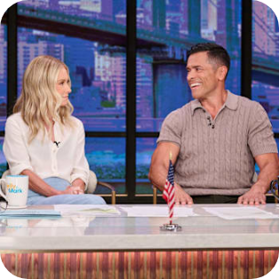
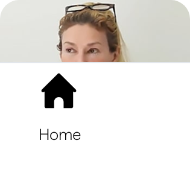

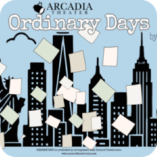


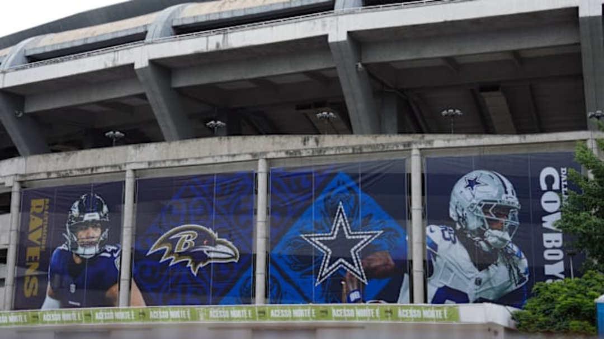
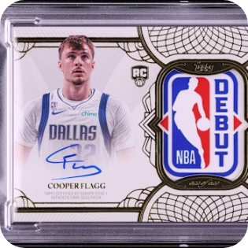
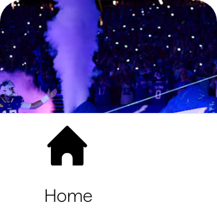
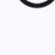
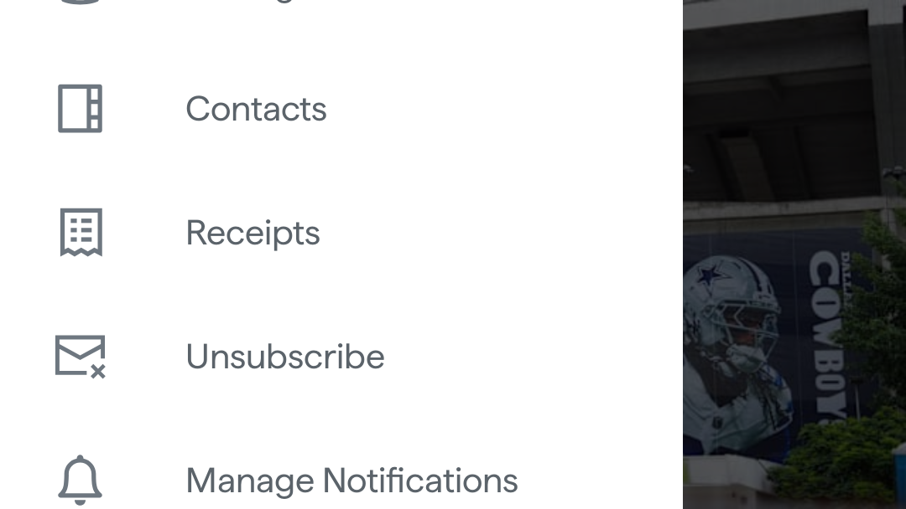
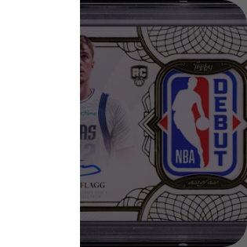
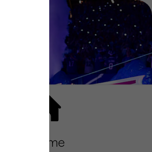


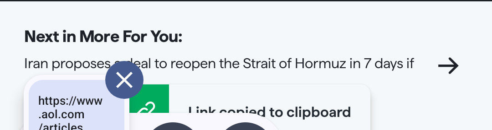
Coverage
17 states, 58 edges, 1 external surfaces, 60 steps in 8.3 min ($0.00). Stop: budget_steps. Frontier left: 96. Unreachable: 13. Human interventions: 0.
Not explored (and why)
| screen | action | intent | why |
|---|---|---|---|
| Home News Feed | a02_12 | tap "Share this news article" | guard: out of scope |
| Home News Feed | a02_13 | View ad | guard: ad (observe ads, never click them) |
| Home News Feed | a02_14 | tap "Share this news article" | guard: out of scope |
| Article Details | a03_9 | tap "•" | only 0% visible after scrolling (not safely tappable) |
| Article Details | a03_16 | View advertisement | guard: ad (observe ads, never click them) |
| Article Details | a03_17 | Share link on Facebook | guard: out of scope |
| Article Details | a03_18 | Share article | guard: out of scope |
| Conversation Screen | a04_24 | tap "Share" | guard: out of scope |
| Conversation Screen | a04_25 | tap "Share" | guard: out of scope |
| Conversation Screen | a04_26 | tap "Share" | guard: out of scope |
| Add Comment Page | a05_1 | Close comment screen | login wall: no human available |
| Add Comment Page | a05_2 | tap "Commenting on" | login wall: no human available |
| Add Comment Page | a05_3 | tap "Tiffani Thiessen Says a Former Resident…" | login wall: no human available |
| Add Comment Page | a05_4 | tap "AOL" | login wall: no human available |
| Add Comment Page | a05_5 | tap "P" | login wall: no human available |
| Add Comment Page | a05_6 | Type a comment | login wall: no human available |
| Add Comment Page | a05_7 | scroll down to reveal more | login wall: no human available |
| Add Comment Page | a05_8 | Sign up to post | annotator: destructive or out of scope |
| Sign In Screen | a06_1 | tap "Help" (tab: unexplored navigation) | login wall: no human available |
| Sign In Screen | a06_2 | tap "Create account" (core loop) | login wall: no human available |
| Sign In Screen | a06_3 | tap "Aol" | login wall: no human available |
| Sign In Screen | a06_4 | tap "Sign in to AOL" | login wall: no human available |
| Sign In Screen | a06_5 | tap "Email or phone number" | login wall: no human available |
| Sign In Screen | a06_6 | tap "Forgot username" | login wall: no human available |
| Sign In Screen | a06_7 | tap "Forgot username" | login wall: no human available |
| Sign In Screen | a06_8 | tap "Help" | login wall: no human available |
| Sign In Screen | a06_9 | Enter email or phone number | guard: credential field (a human enters these) |
| Sign In Screen | a06_10 | Proceed to next sign in step | annotator: destructive or out of scope |
| Sign In Screen | a06_11 | tap "Terms" (tab: unexplored navigation) | guard: out of scope |
| Sign In Screen | a06_12 | tap "Terms" | guard: out of scope |
| Sign In Screen | a06_13 | tap "Privacy" (tab: unexplored navigation) | guard: out of scope |
| Sign In Screen | a06_14 | tap "Privacy" | guard: out of scope |
| Home News Feed | a07_2 | Read news article | travel failed twice |
| Home News Feed | a07_3 | tap "Edit locations Error getting weather" | travel failed twice |
| Home News Feed | a07_4 | tap "Your local headlines" | travel failed twice |
| Home News Feed | a07_5 | tap "Raceplace" | travel failed twice |
| Home News Feed | a07_6 | tap "Save this article" | travel failed twice |
| Home News Feed | a07_7 | tap "Creative Loafing Atlanta" | travel failed twice |
| Home News Feed | a07_8 | tap "Ordinary Days | 09/25/2026 7:30 PM | Cr…" | travel failed twice |
| Home News Feed | a07_9 | tap "Save this article" | travel failed twice |
| Home News Feed | a07_10 | tap "YU Commentator" | travel failed twice |
| Home News Feed | a07_11 | tap "Save this article" | travel failed twice |
| Home News Feed | a07_12 | tap "Home" | travel failed twice |
| Home News Feed | a07_13 | scroll down to reveal more | travel failed twice |
| Home News Feed | a07_14 | tap "Share this news article" | guard: out of scope |
| Home News Feed | a07_15 | Ad banner observed | guard: ad (observe ads, never click them) |
| Home News Feed | a07_16 | tap "Share this news article" | guard: out of scope |
| Home News Feed | a07_17 | tap "Share this news article" | guard: out of scope |
| Home News Feed | a07_18 | press BACK | travel failed twice |
| Home News Feed | a08_22 | tap "Share this news article" | guard: out of scope |
| Home News Feed | a08_23 | View ad | guard: ad (observe ads, never click them) |
| Home News Feed | a08_24 | tap "Cooper Flagg rookie card sets astonishi…" | guard: out of scope |
| Home News Feed | a08_25 | tap "Share this news article" | guard: out of scope |
| Home News Feed | a08_26 | tap "Share this news article" | guard: out of scope |
| Search Suggestions | a10_2 | Select suggested search WNBA Playoff Schedule | element not found on screen |
| Account Menu Sidebar | a11_12 | Manage accounts | annotator: destructive or out of scope |
| Account Menu Sidebar | a11_13 | tap "Unsubscribe" (monetization) | guard: destructive |
| Account Menu Sidebar | a11_14 | Unsubscribe options | guard: destructive |
| Account Menu Sidebar | a11_15 | Open settings | annotator: destructive or out of scope |
| Account Menu Sidebar | a11_16 | Give feedback | guard: ad (observe ads, never click them) |
| Account Menu Sidebar | a11_17 | Call customer support | guard: ad (observe ads, never click them) |
| News Feed Home | a13_11 | tap "Share this news article" | guard: out of scope |
| News Feed Home | a13_12 | Observe ad | guard: ad (observe ads, never click them) |
| News Feed Home | a13_13 | tap "Share this news article" | guard: out of scope |
| Home Feed | a14_22 | tap "Share this news article" | guard: out of scope |
| Home Feed | a14_23 | Observe sponsored ad | guard: ad (observe ads, never click them) |
| Home Feed | a14_24 | tap "Share this news article" | guard: out of scope |
| Article Detail Page | a15_14 | View advertisement | guard: ad (observe ads, never click them) |
| Article Ad View | a16_12 | View ad details | ad |
| Article Ad View | a16_13 | Go back to the previous screen | guard: ad (observe ads, never click them) |
| Article Ad View | a16_14 | tap "Share link on Facebook" (tab: unexplored navigation) | guard: out of scope |
| Article Ad View | a16_15 | tap "Share article" (tab: unexplored navigation) | guard: out of scope |
Human steps and overrides
None.